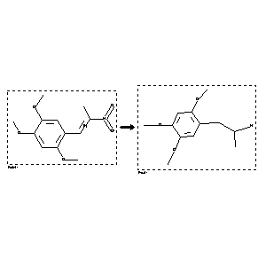

 |
| FA | RX(1); FLST(1); RX(1) |
Reaction (1 of 1)
| Reaction ID | 7988901 |
| Reactant BRN | 3144317 |
| Reactant | lead-cathodes; 2.4.5-trimethoxy-1-(2-nitro-cis-propenyl)-benzene |
| Product BRN | 2112181 |
| Product | 1-methyl-2-(2,4,5-trimethoxy-phenyl)-ethylamine |
| No. of Reaction Details | 1 |
Reaction Details (1 of 1)
| Reaction Classification | Chemical behaviour |
| Other Conditions | Reduktion |
| Comment | Handbook |
| Citation Pointer | 1595559; Journal; Bruckner; JPCEAO; J.Prakt.Chem.; <2> 138; 1933; 268, 270; |
Reference (1 of 1)
| Citation Number | 1595559 |
| Document Type | Journal |
| Authors | Bruckner |
| CODEN | JPCEAO |
| Journal Title | J.Prakt.Chem. |
| (Series) Volume | <2> 138 |
| Publication Year | 1933 |
| Page | 268, 270 |